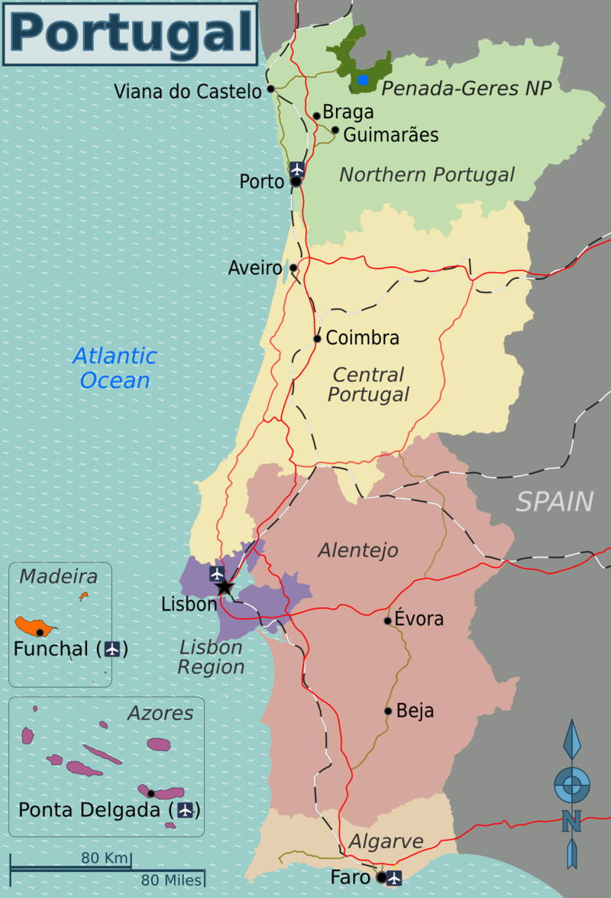
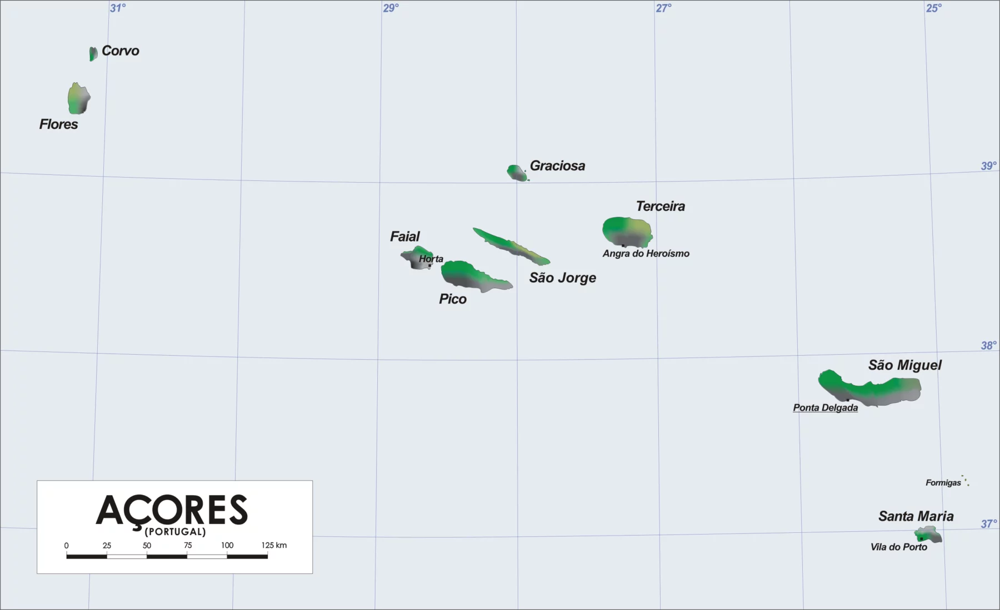
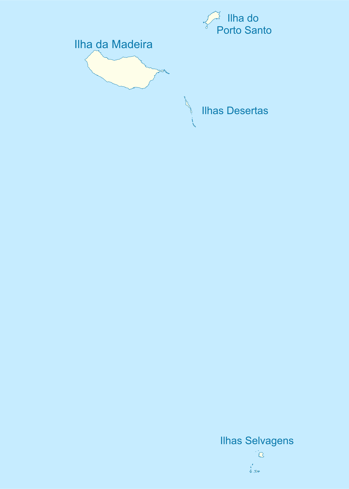

Portugal
Portugal é um país localizado no sudoeste da Europa, cujo território se situa na zona ocidental da Península Ibérica e em arquipélagos no Atlântico Norte.

|

|
|
Bandeira de Portugal
|
Brasão de Portugal
|
O território português tem uma área total de 92090 km², sendo delimitado a norte e leste por Espanha e a sul e oeste pelo oceano Atlântico, compreendendo uma parte continental e duas regiões autónomas: os arquipélagos dos Açores e da Madeira.
|  |
|
Mapa de Portugal
|
Geografia
|  |  |
|
Arquipélago dos Açores
|
Arquipélago da Madeira
|
Cultura
Destaques
Gastromonia
- Pastel de Belém
- Cozido à portuguesa
- Bacalhau à Bras
Arquitetura
- Palácio da Pena
- Castelo de Guimarães
- Sé do Porto
Música
- Fado